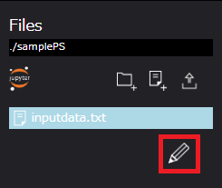

ParameterStudy #

ParameterStudyコンポーネント（以下、PSコンポーネント）は、parameter setting fileプロパティに設定されたファイルを読み込み、
そのファイルに指定されたパラメータ展開を行います。
コンポーネント実行時にはループ系コンポーネントと同様にディレクトリのコピーを作成します。
ループ系コンポーネントとは異なり、コピーされた各ディレクトリの処理は並行して行われます。
PSコンポーネントのプロパティは以下です。
| プロパティ | 入力値 | プロパティ説明 |
|---|---|---|
| name | 文字列 | コンポーネント名 |
| description | 文字列 | コンポーネントの説明文 |
| inputFiles | ファイルまたはディレクトリ名 | 先行コンポーネントから受け取るファイル |
| outputFiles | ファイル, ディレクトリ名またはglobパターン | 後続コンポーネントへ渡すファイル |
| parameter setting file | ファイル名 | パラメータスタディの設定を記述したファイル |
| state clean | ボタン | コンポーネントの進行状態を初期状態に戻す *1 |
*1 コンポーネントの進行状態が"finished"もしくは"failed"の時のみ表示されます。
PSコンポーネントの使用例 #
PSコンポーネントは、パラメトリックスタディ用のコンポーネントです。
WHEELのPS用ファイル編集機能によりインプットデータにパラメータ設定を行うことで、簡単にPSを実施することができます。
以下に、サンプルを用いてPSワークフローの設定方法を示します。
また、本章では、ソルバーの例として、ある空間に位置する3点の座標値からなる三角形の面積を導出するプログラム（面積算出ソルバー:wheel_tutorial_solver.cc）を用います。
PSワークフロー構成図 #

samplePS （PSコンポーネント）
| プロパティ名 | 設定値 |
|---|---|
| Name | samplePS |
| InputFiles | - |
| OutputFiles | - |
| Parameter setting file | parameterSetting.json*1 |
| Files | inputData.txt, parameterSetting.json |
*1 inputdata.txtのパラメータ展開情報をもつJSONファイル、詳細は後述
・inputData.txt #
0, 0, 0
0, {{ hoge }}, 0
10, 0, 0
・parameterSetting.json #
{
"version": 2,
"targetFiles": [
{
"targetName": "inputData.txt",
"targetNode": "daaecfc0-26bf-11ea-85b6-b15713548352"
}
],
"params": [
{
"keyword": "10",
"min": 6,
"max": 10,
"step": 1
}
],
"scatter": [],
"gather": []
}
※ "targetNode"の値ははWHEELが一意に設定します
PSワークフロー子階層 構成図 #

moveFileTask（Taskコンポーネント）
| プロパティ名 | 設定値 |
|---|---|
| Name | moveFileTask |
| Script | moveFiles.sh |
| InputFiles | - |
| OutputFiles | - |
| Remotehost | localhost |
| Files | moveFiles.sh |
・moveFiles.sh #
#!/bin/bash
mv ../inputData.txt ../calcTask
exit 0
calcTask（Taskコンポーネント）
| プロパティ名 | 設定値 |
|---|---|
| Name | calcTask |
| Script | calc.sh |
| InputFiles | - |
| OutputFiles | - |
| Remotehost | localhost |
| Files | calc.sh, wheel_tutorial_solver.cc, inputdata.txt *3 |
*3 inputdata.txtは、moveFileTask実行後にPSディレクトリより移動されるファイルです。
・calc.sh #
#!/bin/bash
g++ wheel_tutorial_solver.cc -o wheel_tutorial_solver
./wheel_tutorial_solver
exit 0
PS用ファイル編集画面 #

入力データにパラメータ設定を行う場合、プロパティ画面[ Files ]エリアよりファイル編集を行います。
手順は以下です。
- PSコンポーネントにパラメータ設定を行う入力データファイルをインポート、または作成する
- 準備したファイルをクリックする
- [ Files ]エリアにあるテキストエディタ起動ボタンをクリックする
上記操作により、テキストエディタ画面が表示されます。
以降、基本的な使用方法を示します。詳細については、テキストエディタ画面仕様説明をご参考ください。
PS用ファイル編集画面 #

テキストエディタ画面でのパラメータ設定手順は以下です。テキストエディタ画面右のPS用エリアを使用します。
次の手順では、上記図 {{ hoge }}を「6から10」まで変化させる場合の設定を示しています。
- パラメータ書き換え対象ファイルを設定する
1.「＋Add New Target File」ボタンをクリックする
2. ターゲットファイルにinputdata.txtを設定する - パラメータ書き換え部分を選択する
- 「Parameters」に選択した部分が正しく表示されていることを確認し、「+ Add New Parameter」をクリックする
- 選択した部分に対し変化させる値を設定し、「save」をクリックする（min:6, max:10, step:1）
- 「SAVE ALL FILES」をクリックし設定内容を保存する
- 設定が終了したら、右上のアイコンをクリックしてグラフビュー画面に遷移する
1.1 「＋Add New Target File」 #

1.2 ターゲットファイルの設定 #

2. パラメータ書き換え部分の選択 #

3. パラメータの設定 #

4. 設定の保存 #

5. 編集したファイル名.jsonの確認 #
保存後、ワークフロー編集画面に戻りプロパティを表示すると、「 parameterSetting.json 」ファイルが作成されていることを確認します。
このデータをプロパティ[ parameter setting file ]に設定します。

以上がParameter Studyワークフローにおけるパラメータ設定手順になります。
PSワークフローの実行 #
PSワークフロー実行時のWHEELの動作について説明します。
PSワークフロー実行時には、プロジェクトディレクトリ内に変化させるパラメータの数だけディレクトリを生成します。
上記例では、三角形を構成する一つの頂点のY座標値を6から10まで変更しているため、「10-6＋1=5」計5個のディレクトリが生成されます。
各ディレクトリには、PSコンポーネントのデータ及びパラメータ変化させたインプットデータが格納されています。
プロジェクトディレクトリ内に生成されるディレクトリ #

PSワークフローを実行すると生成されたワークフローが順に実行されます。
実行後の結果は以下です。
PSワークフロー実行結果 #

また、標準出力（Stdout）の結果は以下です。